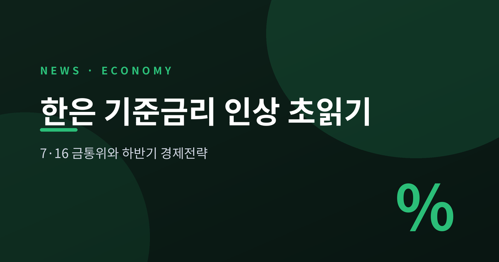
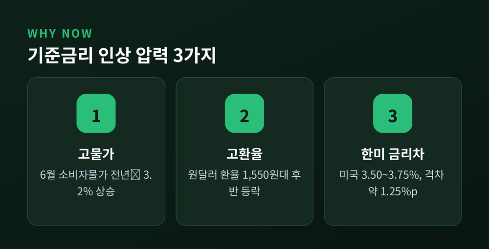
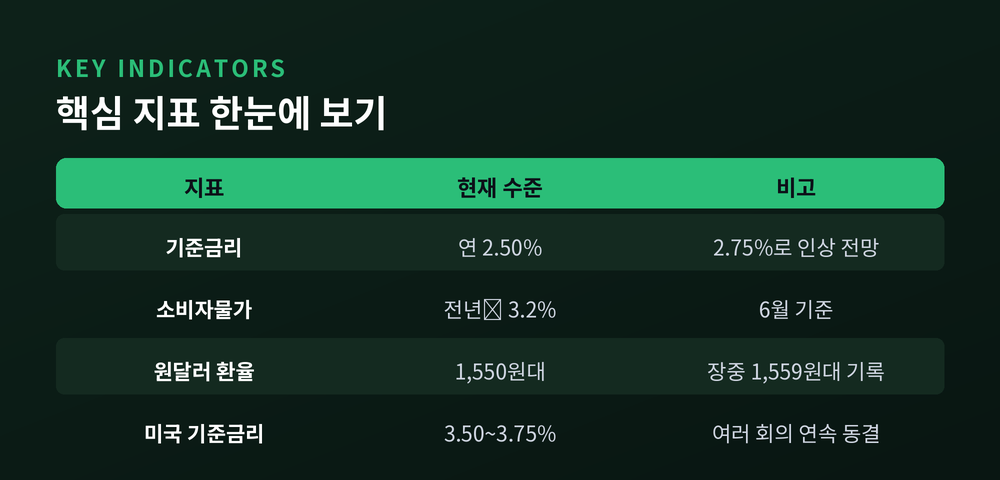
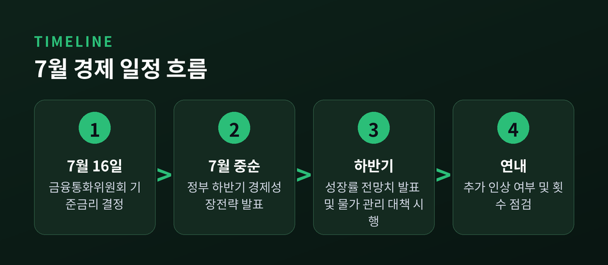

[경제] 한은 기준금리 인상 초읽기, 7·16 금통위 관전포인트

한국은행 금융통화위원회가 7월 16일 통화정책방향 회의를 엽니다. 시장은 현재 연 2.50%인 기준금리를 2.75%로 올릴 가능성을 높게 보고 있습니다. 실현되면 2023년 1월 이후 3년 6개월 만의 인상입니다.
- 3줄 요약
- ① 7월 16일 금통위, 기준금리 2.50%→2.75% 인상 전망
- ② 물가·고환율·한미 금리차가 인상 압력으로 작용
- ③ 정부는 같은 시기 하반기 경제성장전략과 성장률 전망치 발표 예정
무슨 일 — 3년 6개월 만의 인상 초읽기
신현송 한국은행 총재는 최근 2주 사이 공개 석상에서 세 차례나 비슷한 메시지를 냈습니다. "물가 오름세와 성장세 개선, 금융안정 리스크를 고려할 때 적절한 시기에 기준금리를 인상할 필요가 있다"는 취지입니다. 시장은 이를 사실상의 예고로 받아들이고 있습니다. 실제로 일부 해외 투자은행은 이번 금통위에서 만장일치로 0.25%포인트 인상이 결정될 것으로 내다봤습니다. 다만 이는 개별 기관의 전망치이며, 최종 결정은 아니라는 점을 짚어둘 필요가 있습니다.
한은이 이번에 금리를 올린다면 그 의미는 단순한 숫자 변경 이상입니다. 2023년 1월 이후 한은은 줄곧 동결 기조를 유지해 왔습니다. 3년 6개월 만의 방향 전환이라는 점에서, 이번 결정은 통화정책의 국면 자체가 바뀐다는 신호로 읽힐 수 있습니다. 시장의 시선은 이미 한 걸음 더 앞서 있습니다. 7월 인상 자체보다 연내 추가 인상이 몇 차례나 이어질지가 더 큰 관심사로 떠올랐습니다. 일각에서는 연말까지 두세 차례 추가 인상 가능성도 거론되고 있습니다.

왜 중요 — 가계·대출·환율에 미치는 영향
기준금리 인상은 가장 먼저 대출 이자 부담으로 이어집니다. 변동금리 대출을 쓰는 가계와 자영업자는 상환 부담이 늘어날 수 있습니다. 특히 주택담보대출이나 신용대출 비중이 큰 가구일수록 이자 지출 증가 체감이 클 것으로 보입니다. 반면 물가 안정과 환율 방어에는 도움이 될 수 있다는 평가도 나옵니다.
핵심 지표를 짚어보면 이렇습니다.
- 소비자물가: 2026년 6월 기준 전년 동월 대비 3.2% 상승
- 원·달러 환율: 7월 초 1,550원대에서 1,560원 가까이 등락
- 한미 금리차: 현재 기준 상단 약 1.25%포인트
원·달러 환율은 7월 초 1,550원대에서 1,560원 가까이 오르내리는 고환율 국면이 이어지고 있습니다. 한미 금리차 역시 변수입니다. 미 연방준비제도는 정책금리를 3.50~3.75%로 여러 차례 연속 동결했습니다. 한국이 금리를 올리지 않으면 금리차가 더 벌어져 외국인 자금 유출과 원화 약세 압력이 커질 수 있다는 우려가 있습니다. 중동 정세發 유가 불안도 물가 변수로 거론되지만, 최근에는 분쟁이 진정 국면에 들어서며 유가 상승 압력이 다소 누그러졌다는 관측도 함께 나옵니다. 결국 인상이 현실화되면 물가·환율 안정에는 우호적이되, 가계 이자 부담은 그만큼 커지는 양면적 결과가 예상됩니다.

전망 — 하반기 경제전략과 함께 봐야 할 이유
정부는 다음 주 하반기 경제성장전략을 내놓을 예정입니다. 이 자리에서 올해 실질GDP 성장률 전망치도 함께 발표됩니다. 반도체 수출 호조에 힘입어 성장률 전망치는 2%대 후반으로 제시될 가능성이 거론됩니다. 정부는 고물가·고환율·고금리, 이른바 '3고' 국면 대응책도 함께 준비 중인 것으로 알려졌습니다. 하반기 물가상승률을 3% 이내로 관리하겠다는 목표 아래 재정 투입 방안도 검토되고 있다고 합니다.
이와 함께 인공지능 관련 투자 확대와 지방 주도 성장 등 잠재성장률을 끌어올리기 위한 중장기 과제도 함께 검토되고 있는 것으로 전해집니다. 결국 금통위의 금리 결정과 정부의 성장전략은 같은 문제의 양면입니다. 물가를 잡으려는 통화정책과 성장을 끌어올리려는 재정정책이 같은 시기에 시험대에 오르는 셈입니다. 두 결정이 엇박자를 내지 않을지가 관전 포인트로 보입니다. 가계와 기업 모두 대출금리와 환율, 세제 지원 방향을 함께 살펴봐야 할 시점으로 보입니다.

한은의 기준금리 인상은 아직 확정된 사실이 아니라 유력한 전망입니다. 그럼에도 3년 6개월 만의 방향 전환이라는 점에서 무게가 다릅니다. 물가를 잡되 성장의 발목을 잡지 않는 균형, 그것이 이번 결정의 진짜 과제로 보입니다.
"금리는 숫자지만, 그 파장은 가계부를 통해 각자의 삶으로 흘러갑니다."
본 글은 정보 제공용이며 투자 권유가 아닙니다.